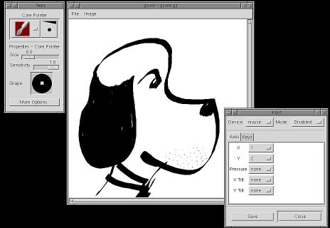

More...

More... |
X Input ... |
| © 1998 Michael J. Hammel |
 |
After the SubSection line is the line defining the device port to use. My tablet uses a serial port and I suspect most of the other tablets do as well. In this case, /dev/ttyS1 is my second serial port. Although you may be able to use the /dev/cua1 device here as well, I've read that it is recommended to use the cua devices only for modems. If you use a multiport serial card, such as the Comtrol RocketPort, and have the device connected to one of those ports then the device name will be different. The Comtrol controller sets up ports with names running from /dev/ttyR0 to /dev/ttyR15 (depending on how many cards and ports you have installed).
The Mode Absolute line is required. Unfortunately I don't really have any information as to what would happen if you didn't include this line. The last line, Suppress, is used to set the movement sensitivity of the pen. Higher values mean that the pointer on the screen won't move as quickly as you move the pen around the tablet. I experimented with the default value (from the X Input Howto) of 9 and found the pointer jumped too quickly for my taste. A value of 17 seemed to work more to my liking.
These are the only changes you'll need to make to the XF86Config file. We'll test this configuration in a moment but first lets make sure you have the hardware connected properly. The PenPartner, at least, has two connectors that have to be connected to your system. One plugs into your keyboard connector and allows your keyboard to be connected to it. This is used to get power to the tablet. The other connector is a typical serial connector and should be plugged into the port specified by your Port line in the XF86Config file. Be certain you don't have the power on when you attach the plug that goes to the keyboard connector. If you do you can cause damage to the tablet. After the keyboard and serial connectors are in place you can power up your computer.
In my setup I have only two serial ports, with one of those dedicated to the mouse. The other port is shared between a modem, a PalmPilot cradle and the Wacom PenPartner. I have each of these connected to an AB switch box. This configuration works just fine but be certain that the switch box is set to the tablet port before starting your X session. If you don't then the X server won't see the tablet during initialization and you won't be able to use it.
Testing the configuration: xsetpointer and gsumi
Ok, you've got your server up and the tablets connected. The first thing we want to do is make sure the tablet is being seen by the server. To verify this, run the following command:
xsetpointer -lThe output, if you're configuration is like the one I gave earlier, should look like this:
"pointer" [XPointer]If you see the Wacom and Eraser entries then you're all set. If not, you need to double check that you have your XF86Config file properly set up and that you have a 3.3.1 or 3.3.2 XFree86 server running and you have the proper modules loaded (from the XF86Config file).
"keyboard" [XKeyboard]
"Wacom" [XExtensionDevice]
"WacomCore" [XExtensionDevice]
"ERASER" [XExtensionDevice]
"EraserCore" [XExtensionDevice]
If all this is in place and looks correct, try moving the pen around on the tablet. Does the pointer on the screen move too? If so, you're all set! If not, well, reread the first part of this article and then check the X Input Howto to see if you might have missed something.
Next we want to try an application with X Input support. The easiest one to try is gsumi, a simple black and white drawing program from Owen Taylor. In order to use gsumi you need to first have a version of the GTK+ libraries installed that include X Input support. If you don't have these, you can grab the source code, build and install them. This is fairly easy to do so don't let it frighten you. The INSTALL document that come with the source code does a decent job of describing the build process, including the one additional option argument to the configure script that you need: --with-xinput. So, taking the INSTALL information from GTK+ and modifying it, you would do the following:
% gzip -cd gtk+-1.0.5.tar.gz | tar xvf - # unpack the sourcesAfter this completes you're ready to build gsumi. This is easier to do that GTK+. Just unpack the software and run the following commands:
% cd gtk+-1.0.5 # change to the toplevel directory
% ./configure --with-xinput=xfree # run the `configure' script
% make # build GTK
[ Become root if necessary ]
% make install # install GTK
% configureNow you can actually try an application that uses X Input. Start gsumi with the command
% make
[ Become root if necessary ]
% make install
% gsumiFigure 1 shows the gsumi interface.
| 
Figure 1: The gsumi interface - note the ... |
Setting the buttons on the pen to map to mouse buttons is done using the xinput program. With the PenPartner, try
% xinput set-button-map Wacom 1 3 2This sets the pen button as your right mouse click (assuming a 2 button mouse) and the eraser as button 3. Making changes like this may affect how your pen interacts with your applications so you may need to expermiment with the xinput program till you find a configuration you like.
Building the Gimp with X Input support
Everything seems to be working now, so lets get the Gimp running with X Input support too. The first you thing you need to know is that, like gsumi, the Gimp needs to be compiled with a version of the GTK+ libraries that has X Input enabled. You've already installed an X Input enabled GTK+ earlier in this article. Now you just need to grab the Gimp sources and recompile them. All of the Gimp plug-ins also need recompiling. If you downloaded any of the plug-ins on their own, for example from the Plug-In Registry, and built them outside of the core Gimp source tree then you'll need to recompile them individually. If you do end up recompiling any of the plug-ins by themselves then you need to be certain that their Makefiles are updated to link with the X Input library using the -lXi option. Add this right before the -lX11 option (which all plug-in Makefiles are likely to have). For example, the Curtain plug-in has the following line in its Makefile:
LDADD=-L/usr/X11R6/lib -lgimp -lglib -lm -lgtk -lgdk -lXext -lX11You should modify this to look like the following:
LDADD=-L/usr/X11R6/lib -lgimp -lglib -lm -lgtk -lgdk -lXi -lXext -lX11If you don't rebuild the plug-ins they'll crash when you start the Gimp. All of the plug-ins that are part of the core source distribution will be rebuilt when you rebuild the core Gimp source.
Once you've rebuilt the Gimp with X Input support you can use the mouse or tablet to perform the same functions you're probably now very familiar with in the Gimp. There is one additional feature to the Gimp that can be added, however. This feature requires an additional patch and will allow you to make use of an Input Devices dialog from the Gimp. I wasn't able to get this properly working before this article had to be submitted so all I can do here is pass on the information provided by Owen. This information is also provided by Owen's step-by-step instructions for using the Gimp with X Input.
To apply the patch you need to first start with a clean source tree. Change directories to your Gimp sources and type
% make distcleanNow apply the patch. Here we assume the patch has been saved to your /tmp directory:
% gzip -cd /tmp/patch-gimp-xinput.10.gz | patch -p1If when you downloaded the file using a Netscape browser the file name was changed to remove the .gz extension, you may still have a gzipped file. To check this type:
% automake app/Makefile
% file /tmp/patch-gimp-xinput.10If it tells you its a gzipped file then you can still use the two preceeding lines but leave off the .gz suffix from the patch filename. If its not a gzipped file anymore then use the following lines instead:
% cat /tmp/patch-gimp-xinput.10 | patch -p1Then build the Gimp:
% automake app/Makefile
% make cleanAside from the Input Devices dialog there isn't anything to show you here in the way of screen shots. The effect of having done all this work is that you now have a version of both gsumi and Gimp that will respond to either the mouse or the drawing tablet as input devices. It turns out this isn't very hard to get working, but it can be a little time sonsuming, especially if you're not familiar with what should be happening when you've finished making your XF86Config configuration changes.
% make distclean
% configure
% make
% make install
You can also apply another optional patch, patch-gimp-nopaintbrush,
but only if the Gimp appears to run very slow after having applied the
first patch, or you don't like the effect you get with the pressure-sensitive
brushes. The pressure-sensitive paintbrush has been improved in the
1.1 version of the Gimp (the developers branch of the source code which
is not meant for public use at this time) but the patch-gimp-xinput.10
file, meant for the 1.0 version of the Gimp, can produce a rather "dotty"
output.
In general, patch-gimp-nopaintbrush is not a recommended patch - it
just reverses some portions of the main patch for those people who might
need it.
For those of you with either the XFree86 source code or who have the glibc library installed on your system, Owen has a patch for the Wacom driver which you can pick up at ftp://ftp.gtk.org/pub/users/otaylor/xf86Wacom-owt-patch (source code) or ftp://ftp.gtk.org/pub/users/otaylor/xf86Wacom-owt-linux-glibc.so.gz. The later file is a binary that just replaces the xf86Wacom.so in the /usr/X11R6/lib/modules/ directory. Make a backup of the old one, as always. It fixes a number of problems related to button presses and the eraser. For tablets with two side switches it also modifies the button mapping to, more sanely, have the second side switch mapped to button 3, not button 4.
Thats about it. The only thing left is to fill you in on a few of the caveats I ran into while using my tablet with the Gimp.
Tips on using X Input with the Gimp
Using the Gimp with an XFree86 server configured as in this article doesn't required the use of the gxid daemon. However, you may need to manually set the pointer with xsetpointer if the server doesn't allow you to automatically switch between the mouse and tablet. I had this problem until I got both my XF86Config file and my AB switch box synced up correctly.
The Suppress option can be increased or decreased to adjust how sensitive the pointer will be to pen movements. I set mine to 17 and have just about the same response as my mouse.
Pressing hard on the tablet will get the PenPartner pen to act like a button 1 mouse click. I don't know if this is the same on other tablets. This means that when I move the pointer around I can post menus by pressing hard on the tablet. On the other hand, this doesn't work all that well in the Image Window to post the Image Window menu when I have a drawing tool selected. Sometimes the pointer gets stuck drawing and I have to tap it once to get it to stop. I don't know if this is an intentional feature or a possible bug, but I couldn't find a simple way to repeat it at will.
Wacom does not include tilt support in their 4"x5" tablets, including the PenPartner. Wacom's new Intuos line does include tilt support on the low end models, but it is not yet clear what the driver situation will be for those tablets.
When you use the pen to make selections you have to tap or press hard with the pen to clear the current selection. This doesn't always work and sometimes you get extremely small, almost pointlike, selections left in the window. You may have to use CTRL-Shift-Alt to clear the selection manually.
Be careful about having the pen too close to the pad when you try to use the mouse. It can confuse the server a bit and make it look like the mouse is not working properly.
For those who wish to try, the gxid daemon is supposed to allow other servers to work with gsumi at a minimum. If you use this option you have to compile GTK+ again, this time setting the with-xinput argument to "gxi" instead of "xfree". If you do manage to get this working, drop me a line with the details and I'll post it here in the Muse.
Where to get help: X Input Resources
The first place to start when attempting to configure a tablet with X Input is the X Input Howto:
http://www.gtk.org/~otaylor/xinput/howto/XInput-HOWTO.htmlOwen Taylor maintains this Howto document, along with the gsumi application and Web site:
http://www.gimp.org/~otaylor/gsumi/index.html - GSUMI, an XInput example programThere is an XInput page at XFree86 - http://www.xfree86.org/3.3.2/xinput.html, but its not very helpful.
And of course, the Wacom and Summagraphics Web sites: www.wacom.com
and www.summagraphics.com, respectively.
|
| © 1998 by Michael J. Hammel |
{kind=link}